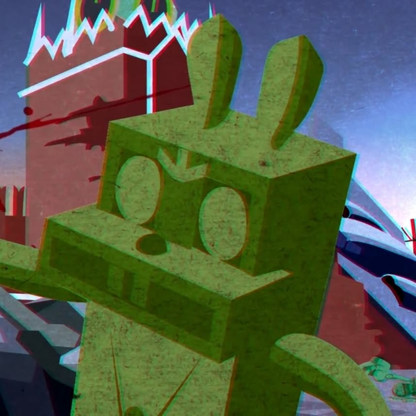
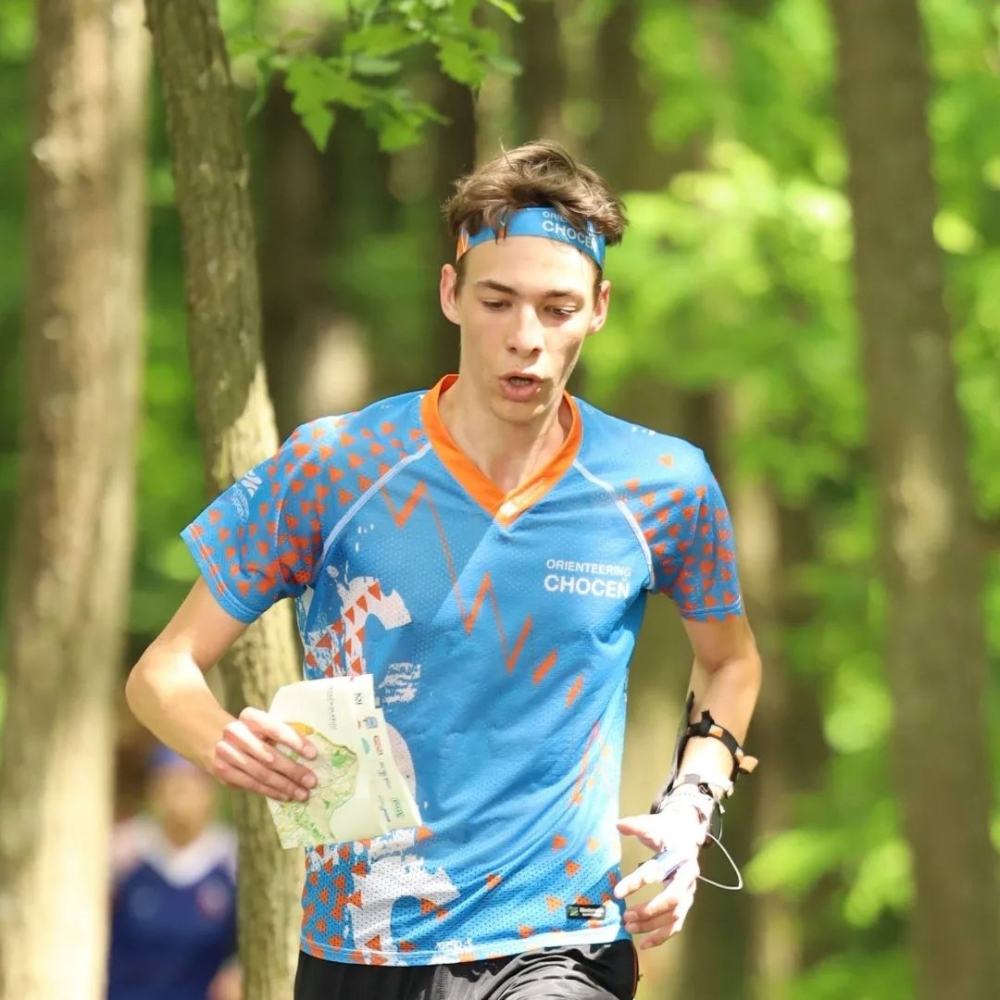

EN |
CZ


Vikvoch
FEKT VUT Brno Based in Czech Republic Žijící v České republiceElectronics Engineer & Enthusiast Nadšený vývojář elektroniky
Electronics EngineerVývojář elektro
Design and development of hardware, specifically with STM32.
Návrh a vývoj hardwaru, zejména s mikrokontroléry STM32.
Smart Home
Building Home Assistant based automation systems.
Stavba chytré domácnosti na platformě Home Assistant.
ProgrammingProgramování
Embedded systems and software development focusing on C/C++.
Embedded systémy a vývoj softwaru se zaměřením na C/C++.
OrienteeringOrientační běh
Active runner and OResults.eu contributor.
Orientační běžec a vývojář OResults.eu.
PhotographyFotografie
Capturing moments with Sony a6600.
Fotím se Sony a6600.
Maker & 3D PrintingMaker & 3D Tisk
Printing on Elegoo Centauri Carbon 2 combo and DIY projects.
Tisk na 3D tiskárně Elegoo Centauri Carbon 2 combo a DIY projekty.